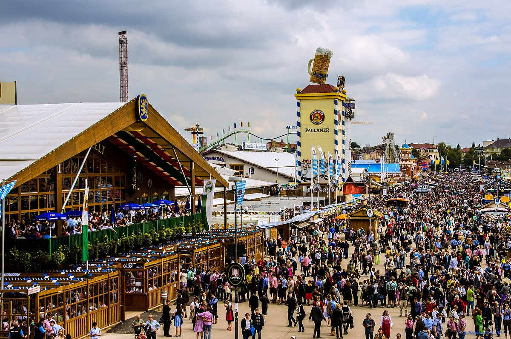

Oktoberfest 2020
Traditionens oprindelse
Oktoberfesten er oprindeligt en tysk folkefest, som opstod da brylluppet mellem kronprins Ludwig og prinsesse Therese skulle fejres den 12. oktober 1810. På Theresienwiese i München besøger nu mere end 6 millioner mennesker lokationen årligt for at fejre Oktoberfest.
Allerede tilbage i slutningen af det 19. århundrede udviklede festen sig til det som vi oplever den i dag, hvor det i stor stil bliver fejret af både lokale såvel som udlændinge der hovedsageligt kommer fra Italien, USA, Japan og Australien.
